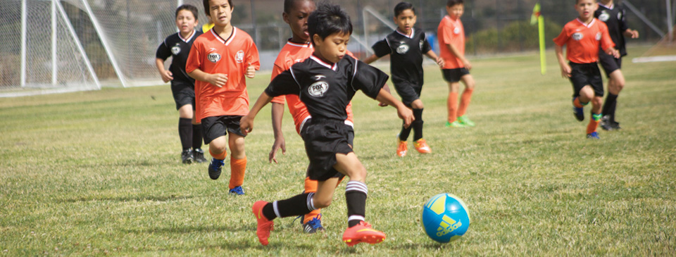
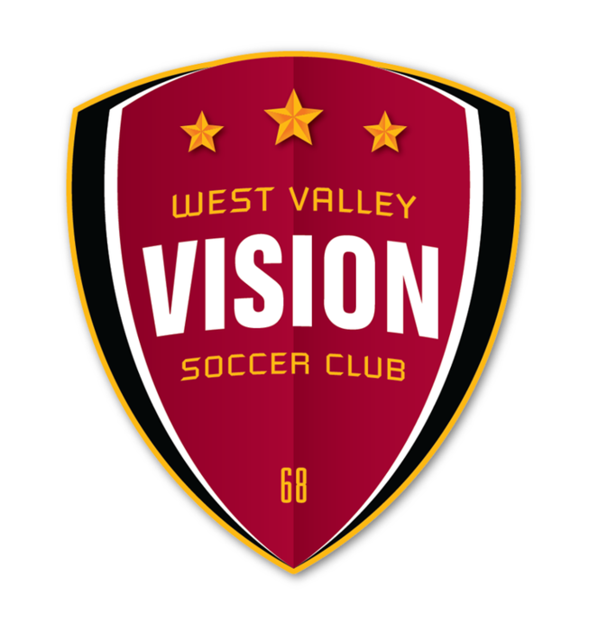
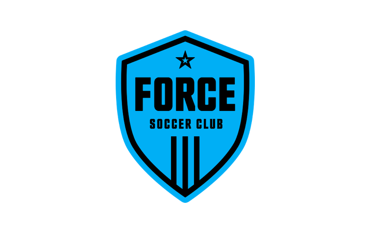

Ronaldinho Gaúcho
Zlatan Ibrahimović
Ronaldinho Gaúcho
Zlatan Ibrahimović
American Youth Soccer Organization (AYSO)
Being a large part of my dad's childhood, soccer immediately became a massive part of my life. At the young age of 5, I was thrown into the world of soccer and brought to the youth league known as AYSO (or American Youth Soccer Organization). The moment I entered the league, I knew that this would be the place for me. I instantly found so much joy in simply kicking the ball and it made me widely curious and determined to see if I could do all the cool tricks and moves that the coaches would do.
Luckily, my dad's athletic ability and skills transferred to me and I managed to pick up the game (at the youth level) very quickly. I started performing really well in games, so much so that my friends and I would destroy opposing teams by scores over 10 goals. An average game has roughly 1 or 2 goals per game, so 10 goals really showed a gap in ability. However, that was the youth level. As my dad saw the talent I had for the game, he eventually brought me (and one of my friends) to a soccer tryout for a competitive team. Little did I know, this new team would be my new home for the next five years and would also be my introduction to the competitive world of soccer. Attached here is the link to the AYSO website.
West Valley Soccer Club
West Valley Soccer Club would be my new home. Now, the name has shifted to West Valley Vision (as seen by the logo), but this was the team that taught me the true basics of soccer (or football) and led me to be the player I am today. To be fully honest, it was intimidating in the beginning seeing so many players that were of a similar or higher level than I was. I was used to AYSO where most people would end up stop playing soccer and find other hobbies and interests to do. There, the level was much lower and the majority of people playing were because their parents signed up them randomly or threw them in for fun.
Despite being intimidated in the beginning, I ended up slowly finding myself and discovering my potential. I successfully made the first tryouts I participated in (and so did my friend). Eventually, my friend stopped playing soccer and left me to explore other avenues. I kept playing and started to realize that I was really enjoying the game. I was exploring my positions (such as midfield and defense) as well as learning more and more skills. The team I started with was at the copper level and we managed to climb our way up all the way to gold, even about to break our away into premier which is one of highest levels in U.S. soccer. However, out of nowhere, the soccer leagues decided to change up how the age brackets worked and suddenly, our team was on the verge of collapse. Ultimately, due to the age bracket change and our coach leaving to explore his personal career in fashion, we ended up disbanding as a team. Despite that, many of us still keep in touch and we all climbed up to premier on our own. Some of us even continued playing in other teams all the way to college. I was one of those people, having decided to make my move to the very famous and infamous, De Anza Force Soccer Club. Attached here is the link to the West Valley Vision website.
De Anza Force
De Anza Force was notorious for being one of the largest Bay Area soccer clubs. Known for its prestigious awards and high-level coaching, De Anza Force was very scary to join. The player pool was much larger and there were a multitude of different teams (in the club) playing in premier or above. In fact, some of the most skilled players would go overseas and play internationally in academies and clubs in Europe and Brazil.
I was terrified as I first tried out for the team. Keep in mind the highest level I had made it up to previously was Gold. Now, I was about to try out for an academy team that was playing several levels above. Unfortunately, I did not make the academy team, but I was brought on to play for a team below which was still playing in the Premier level (one level above Gold). Overall, De Anza Force was an experience I would never forget and changed me in a multitude of ways that I cannot necessarily explain. There were good moments and there were bad, but it still an unforgettable experience that molded me into the player I am and furthered my interest and love for soccer. Attached here is the link to the De Anza Force website.